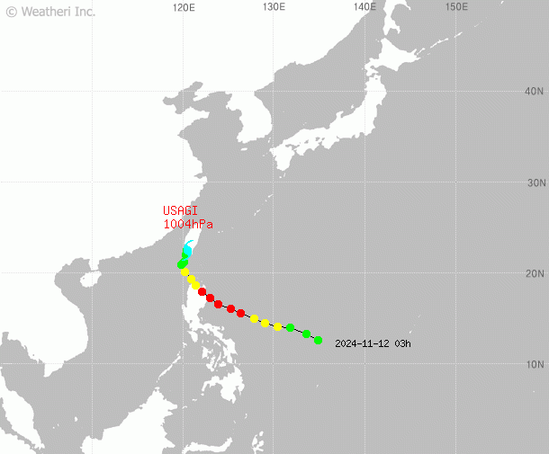

태풍 경로도
현재 태풍은 경주시 남동쪽으로 접근 중입니다. 예상 경로는 기상청 데이터를 기반으로 분석되었습니다.
- 현재 위치: 동경 129.1°, 북위 35.7°
- 진행 속도: 20km/h 북서 방향
- 중심 기압: 950hPa
- 강풍 반경: 300km
피해 예상 지역
인공지능과 지난 데이터를 기반으로 피해 예상 지역을 분석 중입니다...
- 형산강 주변: 침수 피해 예상
- 불국사 지역: 강풍으로 인한 나무 쓰러짐 위험
- 안강읍: 도로 통제 가능성
- 양동마을: 전력 공급 중단 가능